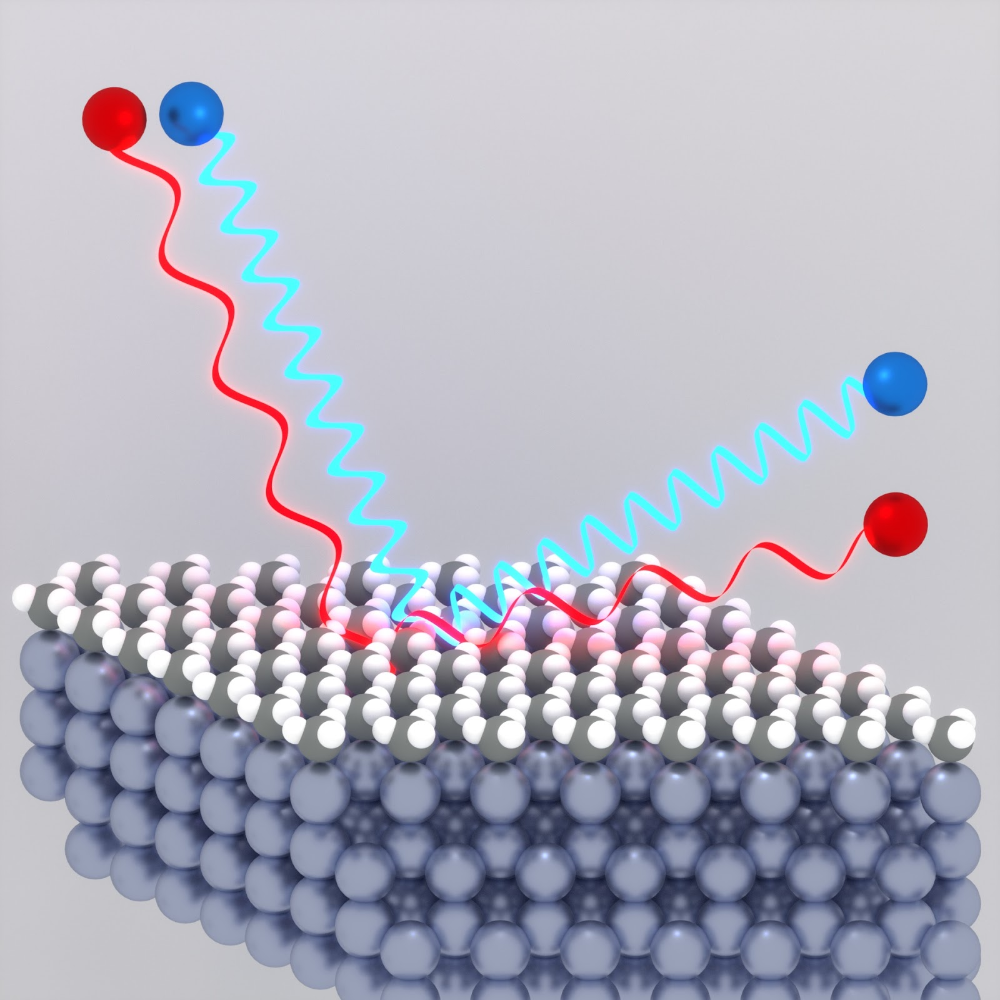
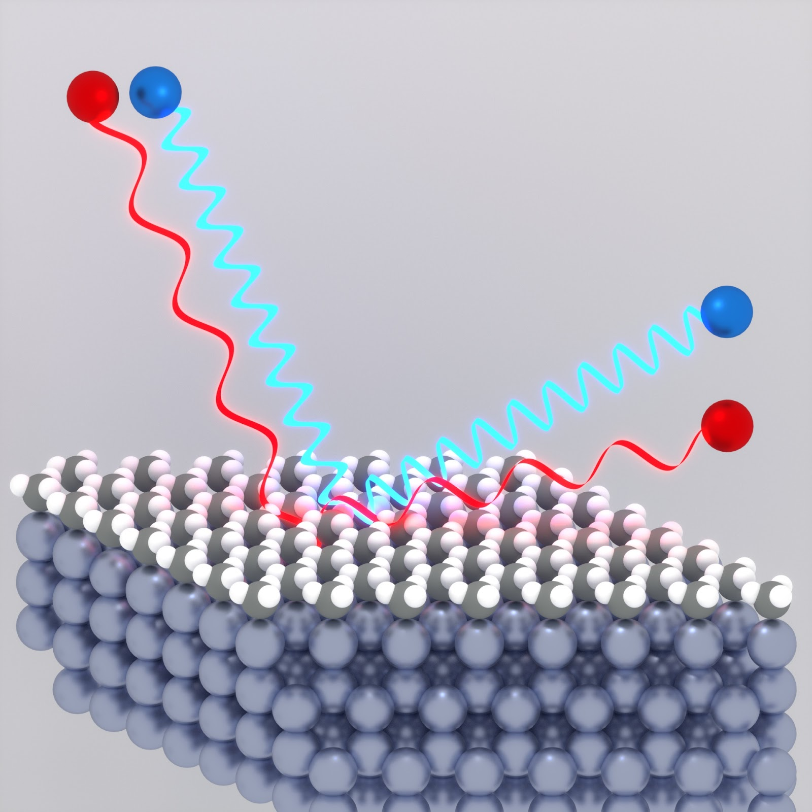
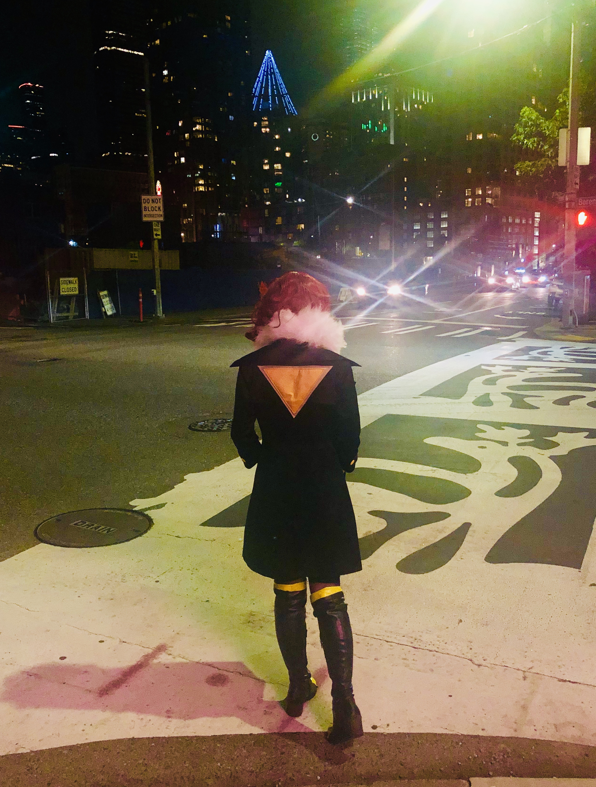
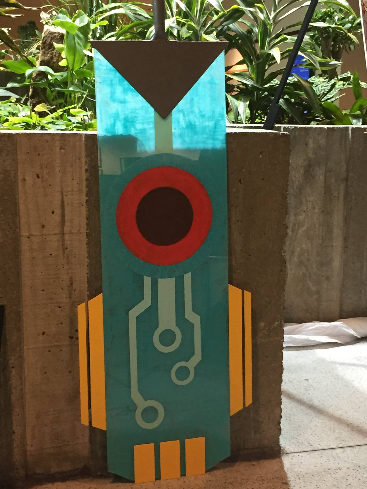
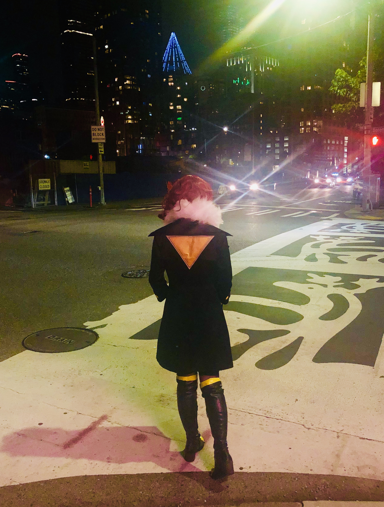
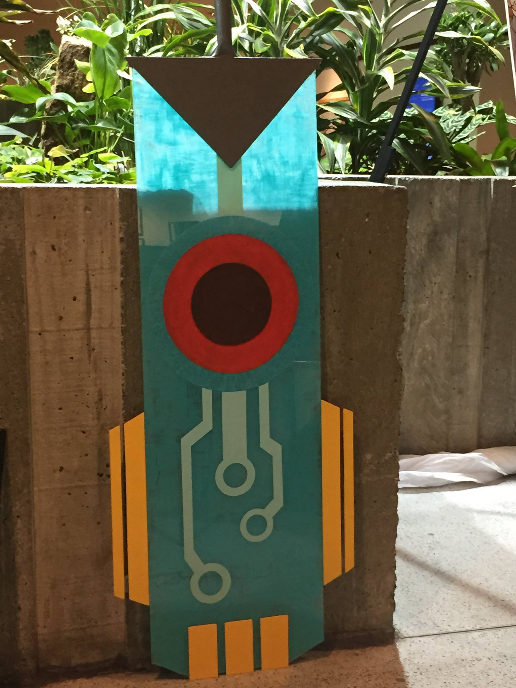

")
Over the years, the artist in me has varied from having an acrylic abstract greeting card line as a child, to an Etsy shop full of jewelry, intricate beaded 3D animals, and crochet clothing and amigurumi (essentially stuffed animals), to handmade cosplay costumes and props, to being the go-to 3D-rendering artist for scientific cover art for my Ph.D. research group. Lately, I've also been getting into watercolor painting as a way to seek out and appreciate the simple beauty in the world (@argon_archer_art on instagram). Here's just a few of the things I've been proud of over the years. Hover over each image to learn more, and follow the links where applicable!
 

, 2017") 


